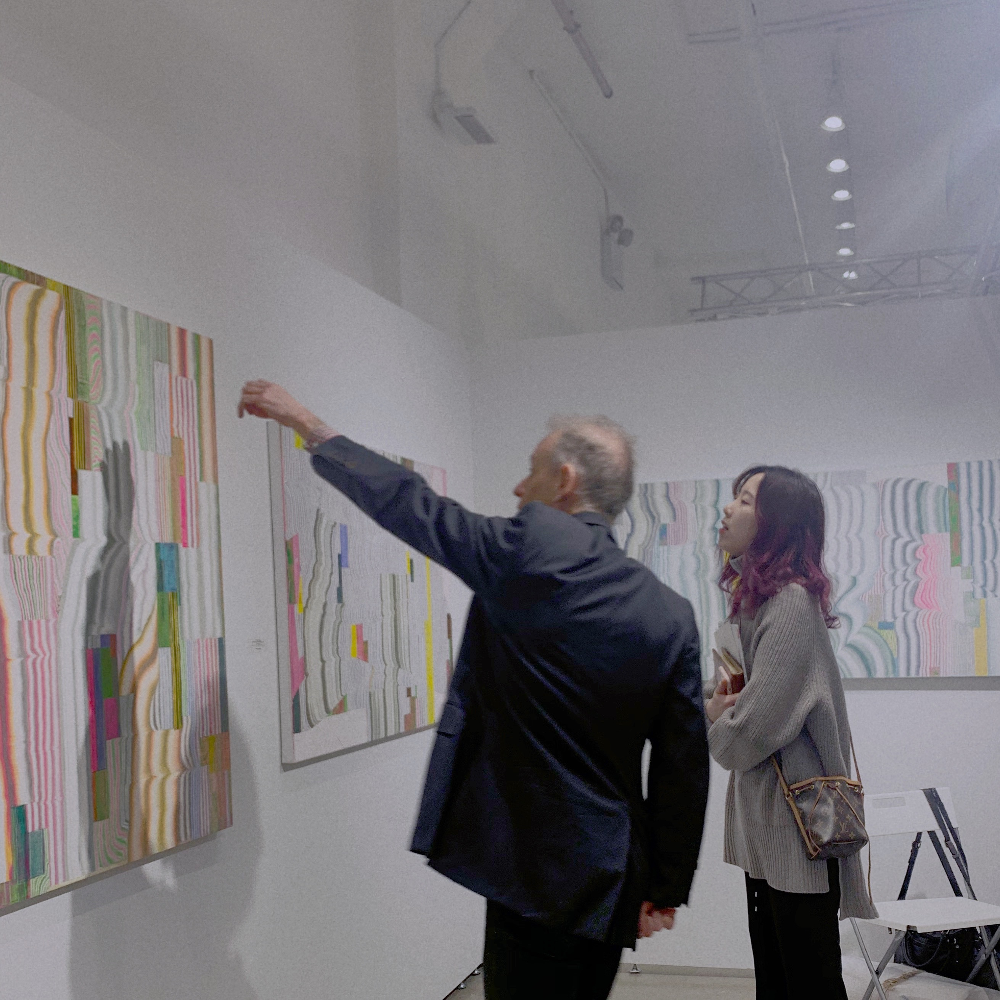

MARCH 2020
|
MARCH 2020 LOCATION: METROPOLITAN WEST VOLTA showcases contemporary positions by up-and-coming and mid-career artists with an emphasis on discovery, both for the curious newcomer and for the seasoned collector alike. By spotlighting artists through solo projects and tightly-curated presentations, VOLTA encourages exhibitors to present serious gallery shows, while refocusing the fair-going experience back on its most fundamental point: the artists and their works. Reflecting its boutique roots, the New York exhibitor list features 53 international galleries. The American incarnation of the original Basel VOLTA show and, since debuting in New York in 2008, it has operated as a beacon for creative discovery and social engagement during Armory Arts Week. In 2020, under the new leadership of Director Kamiar Maleki, VOLTA returns both to New York and to its original intention as a boutique event at the intimate venue of Metropolitan West for a more immersive fair experience. |
 |